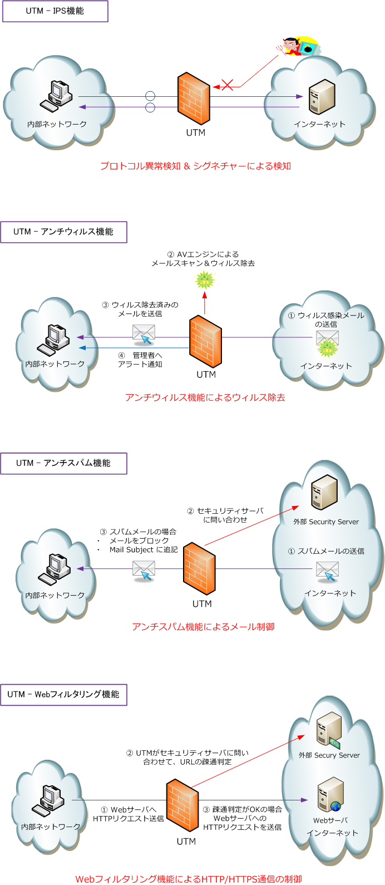

UTM （ Unified Threat Management ）
UTM（ 統合脅威管理 ）
UTMとは、複数のセキュリティ機能を1つの製品に統合し、集中的にセキュリティ対策する手法のことです。 UTM（Unified Threat Management）の用語は正確には「セキュリティ対策の管理手法」を意味しますが、 セキュリティ対策の機能を統合したセキュリティ製品をUTMと呼ぶ場合もあります。
UTM製品は、ファイアウォール、IPS、アンチウィルス、アンチスパム、コンテンツフィルタリングなどの 機能を1つの製品で処理することができます。UTMの機能例を下図でいくつか紹介します。

UTMの機能は製品により異なりますが、多くのメーカーで以下のような機能を有しています。
・ IPS ・ アンチウィルス ・ アンチスパム ・ Webフィルタリング ・ アプリケーション制御 ・ 脆弱性管理 ・ IPレピュテーション（Webサイトやメールの発信元のIPアドレスの健全性を評価する仕組みのこと）
UTMを導入することで、多くのセキュリティ機能を1台で実現することができることから、ネットワークの セキュリティ対策コストを抑えられる点、運用管理がしやすい点はメリットであると言えますが、UTMの 負荷のかかるセキュリティ機能を有効化した場合、通信速度が大幅に低下してしまうデメリットがあります。
小規模なネットワーク環境では、UTMを1台導入してセキュリティ対策を行うことは全く問題ありませんが、 中規模、大規模なネットワーク環境では、全てのセキュリティ機能をUTMの1台だけに担わせるのではなく、 セキュリティ機能により、専用のセキュリティアプライアンスを導入することも検討しましょう。